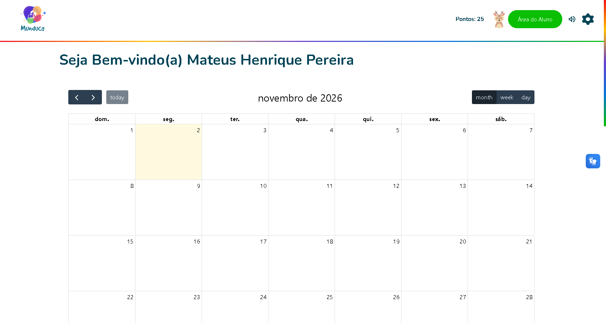
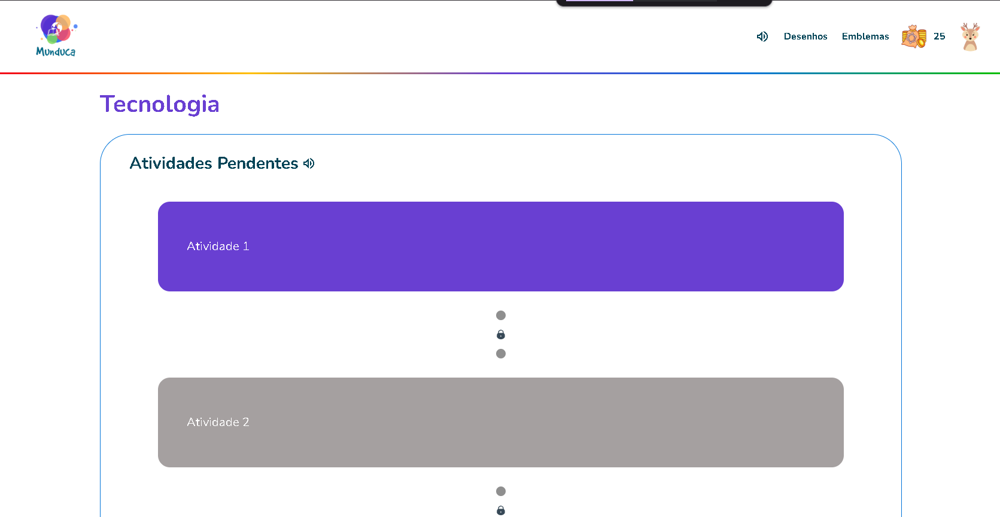
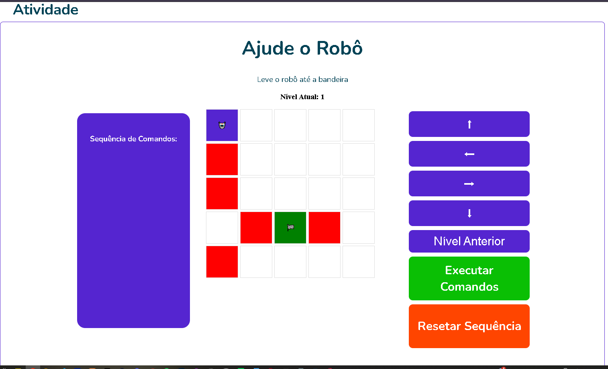

Munduca.
Nas primeiras letras, encontramos um mundo de possibilidades.
Plataforma de educação infantil acessível e gamificada, criada para tornar o aprendizado mais interativo, visual e envolvente.
Aprender brincando.
O Munduca propõe uma experiência educativa com linguagem visual amigável, atividades e elementos de progressão que incentivam a criança a explorar e aprender.




Uma experiência lúdica e progressiva.
Aprendizagem interativa
Atividades que convidam a criança a participar e experimentar, em vez de apenas consumir conteúdo.
Gamificação
Elementos como pontos, níveis, trilhas e recompensas ajudam a tornar a jornada mais motivadora.
Interface visual
Uso de cores, ilustrações e componentes visuais para aproximar a experiência do público infantil.